Our Research Method
Survey
We conducted a survey to understand the public’s views, experiences, and level of understanding regarding sexual harassment, legal protection, as well as the safety and support available to victims in Indonesia. The survey received a total of 35 responses from various college students. All responses submitted through Google Forms were anonymous. The results and analysis of the survey are presented below.
University Responses

The survey received responses from students representing universities across Indonesia.
I understand what is meant by sexual harassment.
30 out of 35 respondents (85.7%) gave a score of 5,
while the remaining 5 (14.3%) gave a score of 4.
No respondents selected 1–3.
The results indicate that respondents generally have
a very strong understanding of what sexual harassment
means. This suggests that basic awareness of the issue
is already relatively high among the surveyed university
students.
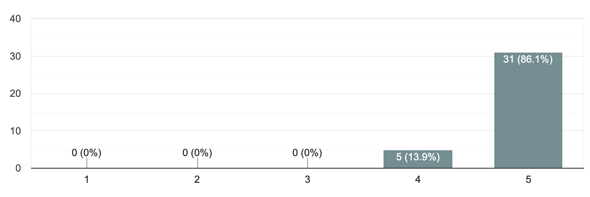
This question measures how well respondents understand the basic meaning and definition of sexual harassment.
I know that sexual harassment can occur in various environments, including educational institutions.
33 respondents (94.3%) selected 5, while only 2 (5.7%)
selected 4. No one selected a score below 4.
This is one of the highest-scoring questions in the
survey. Almost all respondents recognize that educational
institutions are not automatically free from sexual
harassment. This indicates strong awareness of the
possibility of harassment occurring within university
environments.
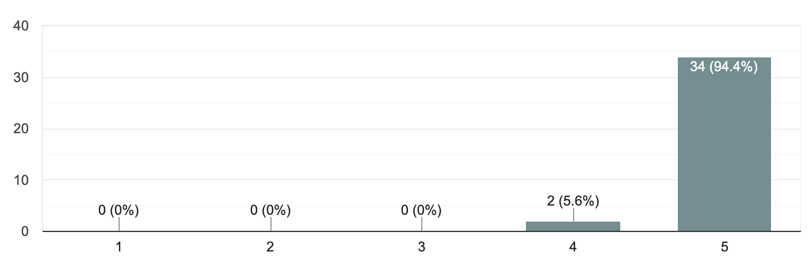
This question measures respondents' awareness that sexual harassment can occur in different environments, including universities and other educational institutions.
I know how to distinguish between behavior that respects personal boundaries and behavior that does not.
30 respondents (85.7%) gave a 5 and 5 respondents (14.3%) gave a 4. No respondent gave a score below 4.
The results suggest that respondents are generally confident in recognizing personal boundaries. This is important because understanding boundaries can help individuals identify potentially inappropriate behavior and respond to it earlier.
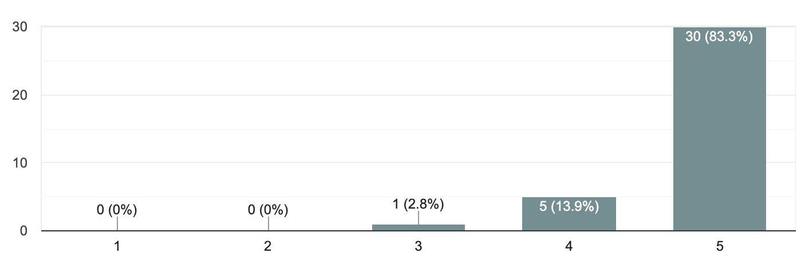
This question examines whether respondents understand personal boundaries and can distinguish appropriate behavior from behavior that crosses those boundaries.
I know where someone can seek help if they experience or witness sexual harassment.
15 respondents (42.9%) gave a 5, while 8 (22.9%) gave a 4. However, 8 respondents (22.9%) selected 3, 3 (8.6%) selected 2, and 1 (2.9%) selected 1.
Unlike the first three questions, the responses are much more varied. Although many respondents know where to seek help, a significant number are uncertain or lack confidence about available support systems. This suggests a gap between general awareness of sexual harassment and practical knowledge about what to do when it occurs.
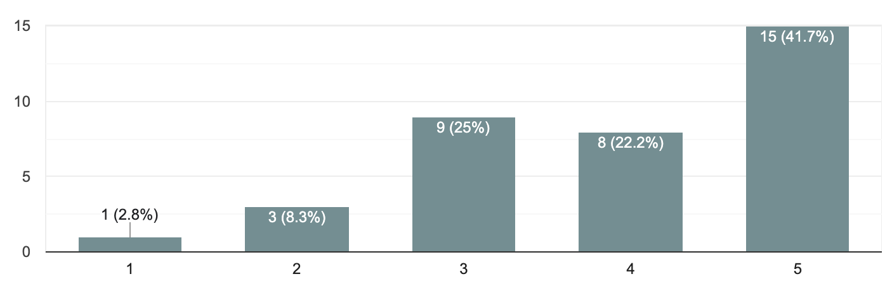
This question measures respondents' knowledge of available support systems and places to seek help after experiencing or witnessing sexual harassment.
I feel that information about preventing sexual harassment is easy to find.
12 respondents (34.3%) gave a 5 and 9 (25.7%) gave a 4. However, 9 (25.7%) selected 3, 4 (11.4%) selected 2, and 1 (2.9%) selected 1.
This was the lowest score among Questions 1–7. The results suggest that although students may understand what sexual harassment is, information about how to prevent it is not perceived as equally accessible. This could indicate a need for universities to make educational resources easier to find and more visible.
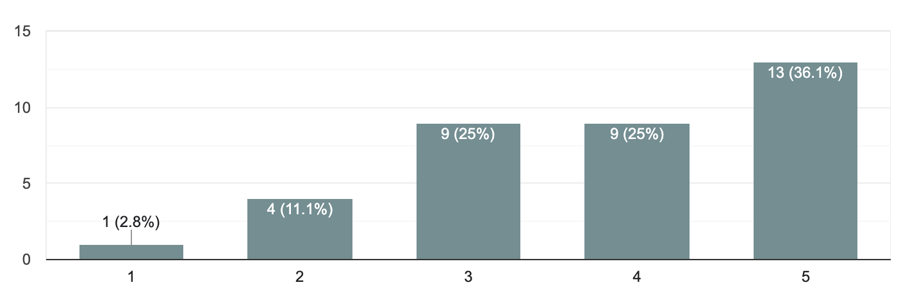
This question measures how accessible respondents perceive information about sexual-harassment prevention to be.
I believe that universities should provide regular education about preventing sexual harassment.
[12 respondents (34.3%) gave a 5 and 9 (25.7%) gave a 4. However, 9 (25.7%) selected 3, 4 (11.4%) selected 2, and 1 (2.9%) selected 1.
This was the lowest score among Questions 1–7. The results suggest that although students may understand what sexual harassment is, information about how to prevent it is not perceived as equally accessible. This could indicate a need for universities to make educational resources easier to find and more visible.
This question measures whether respondents believe universities should provide regular education and prevention programs concerning sexual harassment.
I believe that students need to know about their rights and the protections available to them regarding sexual harassment.
31 respondents (88.6%) selected 5, 3 (8.6%) selected 4, and only 1 (2.9%) selected 3. Nobody selected 1 or 2.
The very high score demonstrates that respondents strongly recognize the importance of students knowing their rights. This is particularly significant because understanding rights can help students feel more empowered to seek assistance, report incidents, and understand what protections are available to them.
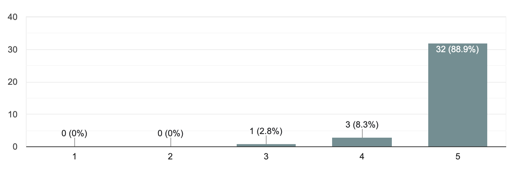
This question examines whether respondents believe students should understand their rights and protections regarding sexual harassment.
I feel safe saying “no” when someone does something that makes me uncomfortable.
20 respondents (62.5%) selected 5 and 9 (28.1%) selected 4. Two respondents (6.3%) selected 3 and one (3.1%) selected 2. Nobody selected 1.
Most respondents feel confident saying “no” when they are uncomfortable. However, the presence of lower scores shows that not everyone feels equally safe or confident asserting their boundaries. This highlights the importance of creating environments where students feel supported when setting boundaries.
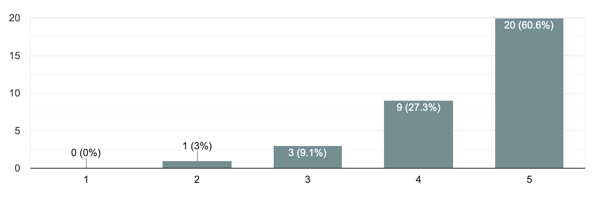
This question measures respondents' sense of personal safety and confidence in establishing boundaries when experiencing uncomfortable behavior.
I feel comfortable talking to someone I trust if I experience or witness sexual harassment.
19 respondents (59.4%) gave a 5 and 8 (25.0%) gave a 4. Three (9.4%) selected 3, while one each (3.1%) selected 1 and 2.
Most respondents feel comfortable seeking support from someone they trust. However, the existence of respondents selecting 1–3 indicates that some students may still feel isolated or uncomfortable discussing harassment. This emphasizes the importance of building trustworthy support networks.
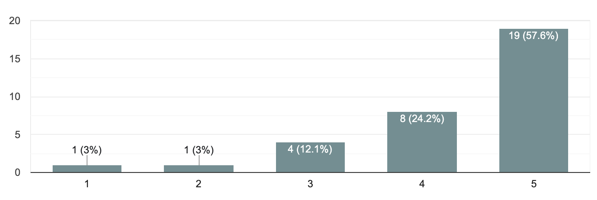
This question measures respondents' willingness to talk to trusted people after experiencing or witnessing sexual harassment.
I am concerned that someone may experience sexual harassment but choose not to report it.
26 respondents (81.3%) selected 5, while 4 (12.5%) selected 4. Two (6.3%) selected 2. Nobody selected 1 or 3.
The high score shows that respondents are highly aware that harassment may go unreported. This is important because experiencing harassment does not necessarily result in a formal report. Fear, uncertainty, stigma, or lack of trust in reporting systems may prevent victims from coming forward.
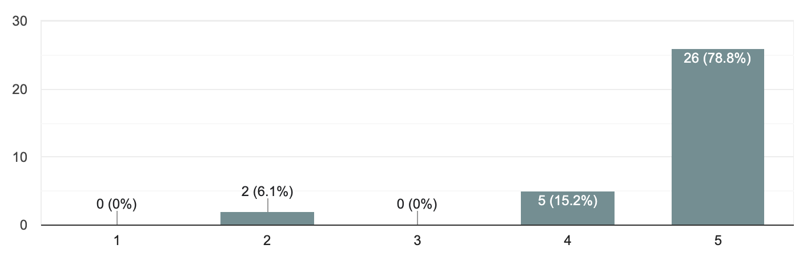
This question measures respondents' awareness of underreporting, where someone experiences harassment but chooses not to report it.
I believe that victims of sexual harassment are often afraid of being blamed or not believed when they report it.
26 respondents (81.3%) selected 5 and 6 (18.8%) selected 4. No respondent selected 1–3.
This is one of the strongest areas of agreement in the survey. Respondents overwhelmingly recognize that fear of being blamed or disbelieved can discourage victims from reporting. This suggests that creating a supportive, non-judgmental reporting environment is an important part of preventing underreporting.
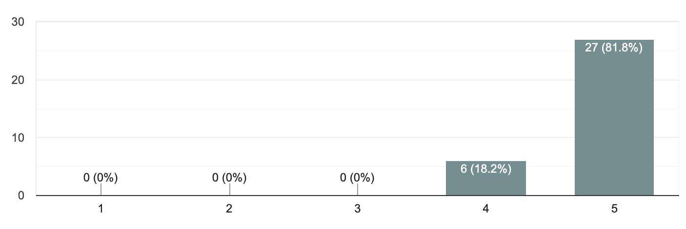
This question examines respondents' perception of victim-blaming and fear of not being believed as barriers to reporting harassment.
I believe that having a safe and trustworthy reporting system would encourage more people to report sexual harassment.
20 respondents (62.5%) selected 5 and 4 (12.5%) selected 4. However, 5 (15.6%) selected 3, 1 (3.1%) selected 2, and 2 (6.3%) selected 1.
Although the overall response is positive, this question has noticeably more uncertainty and negative responses than Question 11. This suggests that respondents strongly understand the need for a safe reporting system, but may be less certain that such systems are actually available or trustworthy. This is an important finding for the research because it points toward a possible gap between recognizing the solution and having confidence in its implementation.
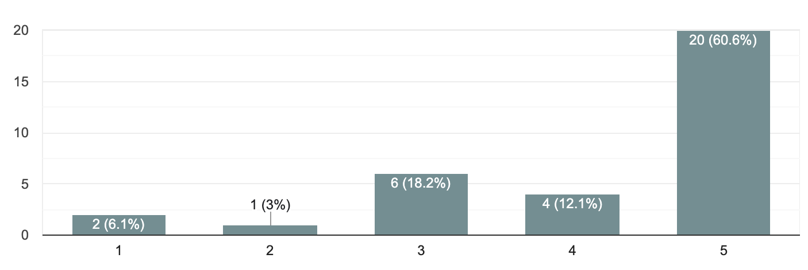
This question measures respondents' belief in the importance and effectiveness of having a safe and trustworthy reporting system.
INTERVIEW
Hope Helps UI
An interview exploring the work, experiences, and perspectives of Hope Helps UI.
ABOUT THE INTERVIEW
Who is Hope Helps UI?
Hope Helps UI is a student-led initiative that works to create awareness and provide support surrounding issues of harassment, violence, and safety within the university environment.
Through this interview, we learn more about their work, their experiences, and their perspective on creating safer spaces within educational institutions.
This interview was conducted as part of the Ruang Aman research project to better understand the experiences and initiatives surrounding safe spaces in Indonesian universities.
Visit Hope Helps UI on Instagram ↗INTERVIEW TRANSCRIPT
Questions & Answers
Based on your experience, what is the biggest gap in students' understanding of sexual harassment and sexual violence?
What is the most common reason students hesitate to report an incident or seek help?
According to the director of HopeHelps UI, students often hesitate to report or seek help because they are afraid of being blamed or judged by others. They explained that some students worry about being called an attention seeker or being seen as someone who is only trying to get attention. The interviewee also mentioned that pressure can come from personal relationships, such as partners, friends, or seniors. In some cases, victims may also experience trauma, which can make it more difficult for them to talk about what happened. Another reason is the fear of what might happen after reporting, especially when the victim has a relationship with the perpetrator.
In your view, what makes a reporting system feel truly safe and trustworthy from a survivor's perspective? We want to build a platform founded on trust when it comes to reporting.
According to the director of HopeHelps UI, privacy and confidentiality are essential in creating a trustworthy reporting system. Survivors may already fear being disbelieved, judged, or exposed, so the reporting process should prioritize confidentiality while providing empathetic and non-judgmental emotional support. Building trust begins with making survivors feel understood and respected. He also emphasized the importance of creating an anti-stigma environment, where reports are taken seriously without labels such as “attention seeker” or “pick me.” HopeHelps avoids assigning survivors to people they already know, as existing relationships may create stigma or discomfort. These insights highlight that Ruang Aman should be built around privacy, empathy, emotional support, and freedom from judgment.
What kind of information do students most frequently need when first seeking help? Is it things like validation or information on legal rulings that can support victims? Could you please elaborate further on that?
The first thing students need when seeking help is emotional support and a safe environment, rather than immediately being presented with complicated policies that state their rights or strict reporting procedures. Trauma is complex, and survivors need to feel heard, believed, and understood before making any decision regarding the next step. Once the foundation of support is established, information about their legal rights and reporting options becomes more viable, meaningful, and empowering. Victims should be emotionally supported first, before anything.
Beyond providing reporting channels and information regarding insights into sexual violence, what role should universities play in preventing and addressing sexual violence?
According to the Local Director of HopeHelps UI, universities need to provide support for survivors, such as psychological, legal, medical, and academic services, to ensure survivors continue to receive support without being penalized in their studies. Universities can also consider facilities like special leave and safe houses for survivors. In addition to handling cases, universities should also conduct awareness and training programs about sexual violence for students, faculty, and staff. According to him, it's important to build a campus culture free from stigma and victim blaming, as well as work together with the community.
If we were to design a website like *Ruang Aman*, what features or information do you think are most important to include right now?
According to the Director General of HopeHelps UI, a website such as Ruang Aman should provide a dedicated reporting section and accessible information to help students understand sexual harassment. The website could also make reporting cases easier for students. Additionally, it should include an educational section containing articles, opinions, and informative materials about sexual harassment. A dedicated page for support services should provide information about available services and explain how they handle reports. Existing materials, such as booklets, could also be uploaded to the website so that students can access this information more easily.
If you could change just one thing about the current system for preventing and handling sexual violence in Indonesian universities, what would you change and why?
According to the Director General of HopeHelps UI, the main aspect that needs to change is the reporting and handling system for sexual harassment at universities, which is currently considered complicated and lacks transparency. The reporting process should be made more accessible so that students feel less afraid or hesitant to report cases. In addition, investigation processes and communication with victims should be accelerated so that they receive clearer and more timely updates about their cases. Awareness and cooperation across the academic community are also important to make the reporting process more effective and strengthen victims’ trust in the system. Lastly, university culture should become more victim-centered to prevent the process from negatively affecting victims further.